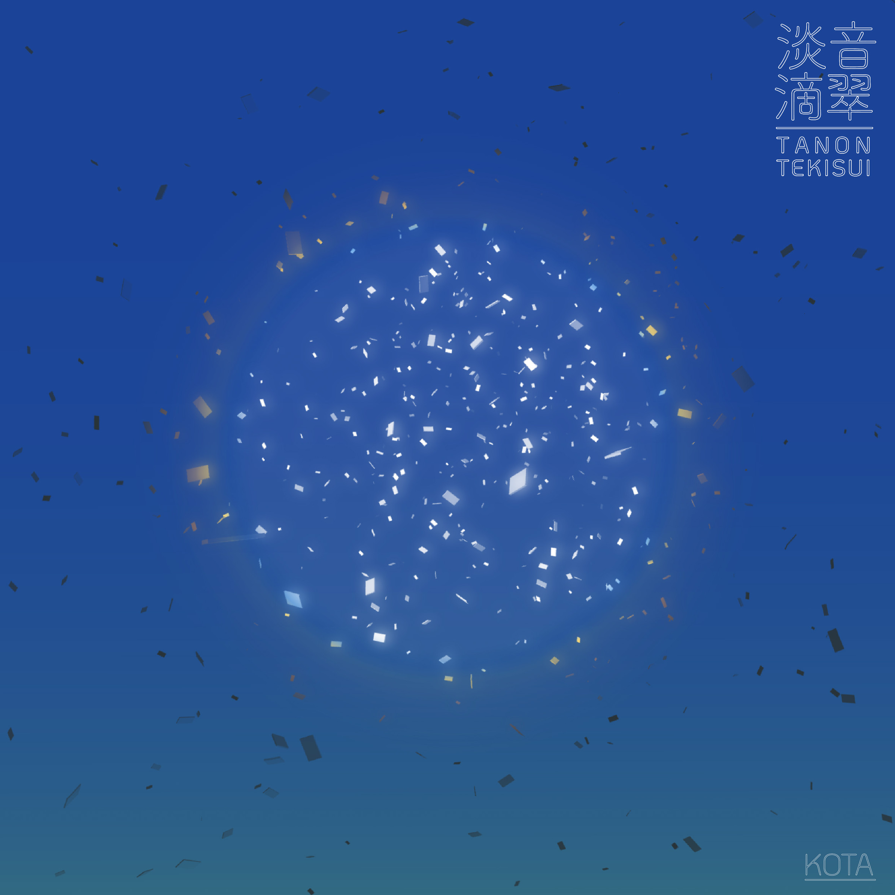
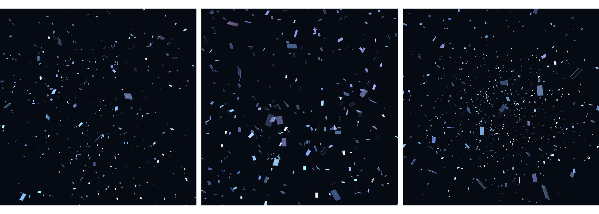
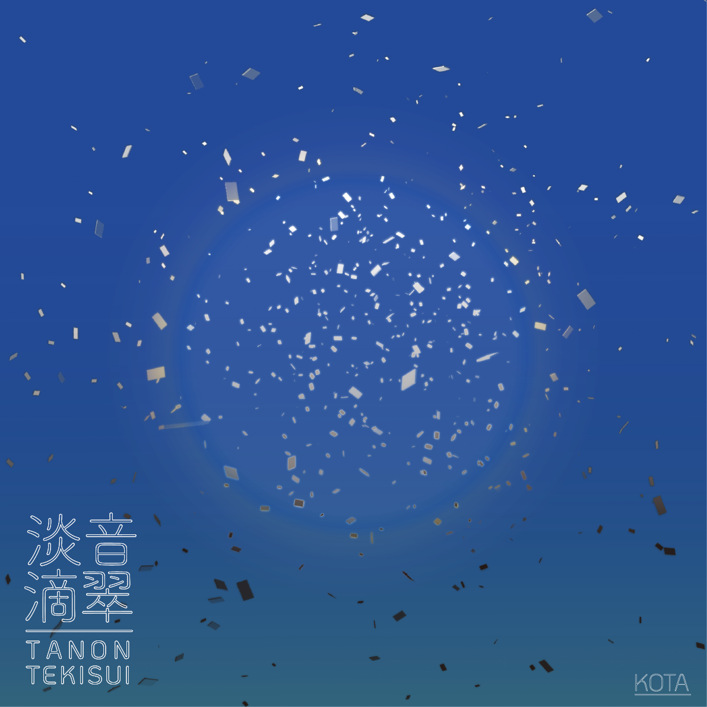

淡音滴翠
2026
DJとして活動する友人KOTAのミックス「淡音滴翠（TANON TEKISUI）」のためにグラフィックを制作しました。Processingで生成した画像をもとにグラフィックを構成しています。
ミックスは「夏の終わり」をイメージしたもので、アンビエント、ジャズ、ダウンテンポ、ハウスが混ざり合っています。目指されているのは、「エアコンの人工的な冷たさでも、送風機の乾いた風でもない、山に入って神社を訪れたときにふと感じるような、湿度と手触りのある冷たさ」です。そこでグラフィックでも、夏らしさと涼しさが両立することを目指しました。
聴き手がそこから何かを見いだすような体験を大事にしたいという依頼を受けて、画面には星のようにも見える粒子を散りばめています。人は昔から星に意味を見いだし、星座をつくってきました。このグラフィックも、聴く人がそれぞれに意味を見いだせる余白として構成しています。
I designed the artwork for "TANON TEKISUI," a mix by my friend KOTA, who is active as a DJ. The graphic is composed from images generated with Processing.
The mix imagines the end of summer, blending ambient, jazz, downtempo and house. What it aims for is "a coolness that is neither the artificial chill of an air conditioner nor the dry breeze of a fan, but the humid, tactile coolness you suddenly feel when you walk into the mountains and visit a shrine." The graphic likewise aims to hold the feeling of summer and a sense of coolness together.
KOTA asked for an experience in which listeners find something of their own in it, so the image is scattered with particles that can also be read as stars. People have long found meaning in the stars and drawn constellations from them. The graphic is composed as an open space in which each listener can find a meaning of their own.